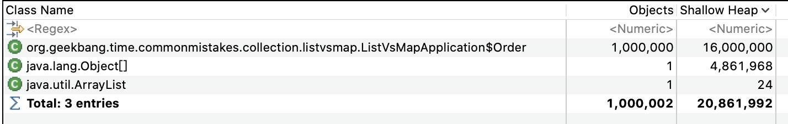
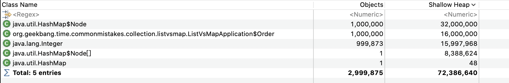

- 00 开篇词 业务代码真的会有这么多坑？.md.html
- 01 使用了并发工具类库，线程安全就高枕无忧了吗？.md.html
- 02 代码加锁：不要让“锁”事成为烦心事.md.html
- 03 线程池：业务代码最常用也最容易犯错的组件.md.html
- 04 连接池：别让连接池帮了倒忙.md.html
- 05 HTTP调用：你考虑到超时、重试、并发了吗？.md.html
- 06 2成的业务代码的Spring声明式事务，可能都没处理正确.md.html
- 07 数据库索引：索引并不是万能药.md.html
- 08 判等问题：程序里如何确定你就是你？.md.html
- 09 数值计算：注意精度、舍入和溢出问题.md.html
- 10 集合类：坑满地的List列表操作.md.html
- 11 空值处理：分不清楚的null和恼人的空指针.md.html
- 12 异常处理：别让自己在出问题的时候变为瞎子.md.html
- 13 日志：日志记录真没你想象的那么简单.md.html
- 14 文件IO：实现高效正确的文件读写并非易事.md.html
- 15 序列化：一来一回你还是原来的你吗？.md.html
- 16 用好Java 8的日期时间类，少踩一些“老三样”的坑.md.html
- 17 别以为“自动挡”就不可能出现OOM.md.html
- 18 当反射、注解和泛型遇到OOP时，会有哪些坑？.md.html
- 19 Spring框架：IoC和AOP是扩展的核心.md.html
- 20 Spring框架：框架帮我们做了很多工作也带来了复杂度.md.html
- 21 代码重复：搞定代码重复的三个绝招.md.html
- 22 接口设计：系统间对话的语言，一定要统一.md.html
- 23 缓存设计：缓存可以锦上添花也可以落井下石.md.html
- 24 业务代码写完，就意味着生产就绪了？.md.html
- 25 异步处理好用，但非常容易用错.md.html
- 26 数据存储：NoSQL与RDBMS如何取长补短、相辅相成？.md.html
- 27 数据源头：任何客户端的东西都不可信任.md.html
- 28 安全兜底：涉及钱时，必须考虑防刷、限量和防重.md.html
- 29 数据和代码：数据就是数据，代码就是代码.md.html
- 30 如何正确保存和传输敏感数据？.md.html
- 31 加餐1：带你吃透课程中Java 8的那些重要知识点（一）.md.html
- 32 加餐2：带你吃透课程中Java 8的那些重要知识点（二）.md.html
- 33 加餐3：定位应用问题，排错套路很重要.md.html
- 34 加餐4：分析定位Java问题，一定要用好这些工具（一）.md.html
- 35 加餐5：分析定位Java问题，一定要用好这些工具（二）.md.html
- 36 加餐6：这15年来，我是如何在工作中学习技术和英语的？.md.html
- 37 加餐7：程序员成长28计.md.html
- 38 加餐8：Java程序从虚拟机迁移到Kubernetes的一些坑.md.html
- 答疑篇：代码篇思考题集锦（一）.md.html
- 答疑篇：代码篇思考题集锦（三）.md.html
- 答疑篇：代码篇思考题集锦（二）.md.html
- 答疑篇：加餐篇思考题答案合集.md.html
- 答疑篇：安全篇思考题答案合集.md.html
- 答疑篇：设计篇思考题答案合集.md.html
- 结束语 写代码时，如何才能尽量避免踩坑？.md.html
10 集合类：坑满地的List列表操作
你好，我是朱晔。今天，我来和你说说 List 列表操作有哪些坑。
Pascal 之父尼克劳斯 · 维尔特（Niklaus Wirth），曾提出一个著名公式“程序 = 数据结构 + 算法”。由此可见，数据结构的重要性。常见的数据结构包括 List、Set、Map、Queue、Tree、Graph、Stack 等，其中 List、Set、Map、Queue 可以从广义上统称为集合类数据结构。
现代编程语言一般都会提供各种数据结构的实现，供我们开箱即用。Java 也是一样，比如提供了集合类的各种实现。Java 的集合类包括 Map 和 Collection 两大类。Collection 包括 List、Set 和 Queue 三个小类，其中 List 列表集合是最重要也是所有业务代码都会用到的。所以，今天我会重点介绍 List 的内容，而不会集中介绍 Map 以及 Collection 中其他小类的坑。
今天，我们就从把数组转换为 List 集合、对 List 进行切片操作、List 搜索的性能问题等几个方面着手，来聊聊其中最可能遇到的一些坑。
使用 Arrays.asList 把数据转换为 List 的三个坑
Java 8 中 Stream 流式处理的各种功能，大大减少了集合类各种操作（投影、过滤、转换）的代码量。所以，在业务开发中，我们常常会把原始的数组转换为 List 类数据结构，来继续展开各种 Stream 操作。
你可能也想到了，使用 Arrays.asList 方法可以把数组一键转换为 List，但其实没这么简单。接下来，就让我们看看其中的缘由，以及使用 Arrays.asList 把数组转换为 List 的几个坑。
在如下代码中，我们初始化三个数字的 int[]数组，然后使用 Arrays.asList 把数组转换为 List：
int[] arr = {1, 2, 3};
List list = Arrays.asList(arr);
log.info("list:{} size:{} class:{}", list, list.size(), list.get(0).getClass());
但，这样初始化的 List 并不是我们期望的包含 3 个数字的 List。通过日志可以发现，这个 List 包含的其实是一个 int 数组，整个 List 的元素个数是 1，元素类型是整数数组。
12:50:39.445 [main] INFO org.geekbang.time.commonmistakes.collection.aslist.AsListApplication - list:[[[email protected]] size:1 class:class [I
其原因是，只能是把 int 装箱为 Integer，不可能把 int 数组装箱为 Integer 数组。我们知道，Arrays.asList 方法传入的是一个泛型 T 类型可变参数，最终 int 数组整体作为了一个对象成为了泛型类型 T：
public static <T> List<T> asList(T... a) {
return new ArrayList<>(a);
}
直接遍历这样的 List 必然会出现 Bug，修复方式有两种，如果使用 Java8 以上版本可以使用 Arrays.stream 方法来转换，否则可以把 int 数组声明为包装类型 Integer 数组：
int[] arr1 = {1, 2, 3};
List list1 = Arrays.stream(arr1).boxed().collect(Collectors.toList());
log.info("list:{} size:{} class:{}", list1, list1.size(), list1.get(0).getClass());
Integer[] arr2 = {1, 2, 3};
List list2 = Arrays.asList(arr2);
log.info("list:{} size:{} class:{}", list2, list2.size(), list2.get(0).getClass());
修复后的代码得到如下日志，可以看到 List 具有三个元素，元素类型是 Integer：
13:10:57.373 [main] INFO org.geekbang.time.commonmistakes.collection.aslist.AsListApplication - list:[1, 2, 3] size:3 class:class java.lang.Integer
可以看到第一个坑是，不能直接使用 Arrays.asList 来转换基本类型数组。那么，我们获得了正确的 List，是不是就可以像普通的 List 那样使用了呢？我们继续往下看。
把三个字符串 1、2、3 构成的字符串数组，使用 Arrays.asList 转换为 List 后，将原始字符串数组的第二个字符修改为 4，然后为 List 增加一个字符串 5，最后数组和 List 会是怎样呢？
String[] arr = {"1", "2", "3"};
List list = Arrays.asList(arr);
arr[1] = "4";
try {
list.add("5");
} catch (Exception ex) {
ex.printStackTrace();
}
log.info("arr:{} list:{}", Arrays.toString(arr), list);
可以看到，日志里有一个 UnsupportedOperationException，为 List 新增字符串 5 的操作失败了，而且把原始数组的第二个元素从 2 修改为 4 后，asList 获得的 List 中的第二个元素也被修改为 4 了：
java.lang.UnsupportedOperationException
at java.util.AbstractList.add(AbstractList.java:148)
at java.util.AbstractList.add(AbstractList.java:108)
at org.geekbang.time.commonmistakes.collection.aslist.AsListApplication.wrong2(AsListApplication.java:41)
at org.geekbang.time.commonmistakes.collection.aslist.AsListApplication.main(AsListApplication.java:15)
13:15:34.699 [main] INFO org.geekbang.time.commonmistakes.collection.aslist.AsListApplication - arr:[1, 4, 3] list:[1, 4, 3]
这里，又引出了两个坑。
第二个坑，Arrays.asList 返回的 List 不支持增删操作。Arrays.asList 返回的 List 并不是我们期望的 java.util.ArrayList，而是 Arrays 的内部类 ArrayList。ArrayList 内部类继承自 AbstractList 类，并没有覆写父类的 add 方法，而父类中 add 方法的实现，就是抛出 UnsupportedOperationException。相关源码如下所示：
public static <T> List<T> asList(T... a) {
return new ArrayList<>(a);
}
private static class ArrayList<E> extends AbstractList<E>
implements RandomAccess, java.io.Serializable
{
private final E[] a;
ArrayList(E[] array) {
a = Objects.requireNonNull(array);
}
...
@Override
public E set(int index, E element) {
E oldValue = a[index];
a[index] = element;
return oldValue;
}
...
}
public abstract class AbstractList<E> extends AbstractCollection<E> implements List<E> {
...
public void add(int index, E element) {
throw new UnsupportedOperationException();
}
}
第三个坑，对原始数组的修改会影响到我们获得的那个 List。看一下 ArrayList 的实现，可以发现 ArrayList 其实是直接使用了原始的数组。所以，我们要特别小心，把通过 Arrays.asList 获得的 List 交给其他方法处理，很容易因为共享了数组，相互修改产生 Bug。
修复方式比较简单，重新 new 一个 ArrayList 初始化 Arrays.asList 返回的 List 即可：
String[] arr = {"1", "2", "3"};
List list = new ArrayList(Arrays.asList(arr));
arr[1] = "4";
try {
list.add("5");
} catch (Exception ex) {
ex.printStackTrace();
}
log.info("arr:{} list:{}", Arrays.toString(arr), list);
修改后的代码实现了原始数组和 List 的“解耦”，不再相互影响。同时，因为操作的是真正的 ArrayList，add 也不再出错：
13:34:50.829 [main] INFO org.geekbang.time.commonmistakes.collection.aslist.AsListApplication - arr:[1, 4, 3] list:[1, 2, 3, 5]
使用 List.subList 进行切片操作居然会导致 OOM？
业务开发时常常要对 List 做切片处理，即取出其中部分元素构成一个新的 List，我们通常会想到使用 List.subList 方法。但，和 Arrays.asList 的问题类似，List.subList 返回的子 List 不是一个普通的 ArrayList。这个子 List 可以认为是原始 List 的视图，会和原始 List 相互影响。如果不注意，很可能会因此产生 OOM 问题。接下来，我们就一起分析下其中的坑。
如下代码所示，定义一个名为 data 的静态 List 来存放 Integer 的 List，也就是说 data 的成员本身是包含了多个数字的 List。循环 1000 次，每次都从一个具有 10 万个 Integer 的 List 中，使用 subList 方法获得一个只包含一个数字的子 List，并把这个子 List 加入 data 变量：
private static List<List<Integer>> data = new ArrayList<>();
private static void oom() {
for (int i = 0; i < 1000; i++) {
List<Integer> rawList = IntStream.rangeClosed(1, 100000).boxed().collect(Collectors.toList());
data.add(rawList.subList(0, 1));
}
}
你可能会觉得，这个 data 变量里面最终保存的只是 1000 个具有 1 个元素的 List，不会占用很大空间，但程序运行不久就出现了 OOM：
Exception in thread "main" java.lang.OutOfMemoryError: Java heap space
at java.util.Arrays.copyOf(Arrays.java:3181)
at java.util.ArrayList.grow(ArrayList.java:265)
出现 OOM 的原因是，循环中的 1000 个具有 10 万个元素的 List 始终得不到回收，因为它始终被 subList 方法返回的 List 强引用。那么，返回的子 List 为什么会强引用原始的 List，它们又有什么关系呢？我们再继续做实验观察一下这个子 List 的特性。
首先初始化一个包含数字 1 到 10 的 ArrayList，然后通过调用 subList 方法取出 2、3、4；随后删除这个 SubList 中的元素数字 3，并打印原始的 ArrayList；最后为原始的 ArrayList 增加一个元素数字 0，遍历 SubList 输出所有元素：
List<Integer> list = IntStream.rangeClosed(1, 10).boxed().collect(Collectors.toList());
List<Integer> subList = list.subList(1, 4);
System.out.println(subList);
subList.remove(1);
System.out.println(list);
list.add(0);
try {
subList.forEach(System.out::println);
} catch (Exception ex) {
ex.printStackTrace();
}
代码运行后得到如下输出：
[2, 3, 4]
[1, 2, 4, 5, 6, 7, 8, 9, 10]
java.util.ConcurrentModificationException
at java.util.ArrayList$SubList.checkForComodification(ArrayList.java:1239)
at java.util.ArrayList$SubList.listIterator(ArrayList.java:1099)
at java.util.AbstractList.listIterator(AbstractList.java:299)
at java.util.ArrayList$SubList.iterator(ArrayList.java:1095)
at java.lang.Iterable.forEach(Iterable.java:74)
可以看到两个现象：
原始 List 中数字 3 被删除了，说明删除子 List 中的元素影响到了原始 List；
尝试为原始 List 增加数字 0 之后再遍历子 List，会出现 ConcurrentModificationException。
我们分析下 ArrayList 的源码，看看为什么会是这样。
public class ArrayList<E> extends AbstractList<E>
implements List<E>, RandomAccess, Cloneable, java.io.Serializable
{
protected transient int modCount = 0;
private void ensureExplicitCapacity(int minCapacity) {
modCount++;
// overflow-conscious code
if (minCapacity - elementData.length > 0)
grow(minCapacity);
}
public void add(int index, E element) {
rangeCheckForAdd(index);
ensureCapacityInternal(size + 1); // Increments modCount!!
System.arraycopy(elementData, index, elementData, index + 1,
size - index);
elementData[index] = element;
size++;
}
public List<E> subList(int fromIndex, int toIndex) {
subListRangeCheck(fromIndex, toIndex, size);
return new SubList(this, offset, fromIndex, toIndex);
}
private class SubList extends AbstractList<E> implements RandomAccess {
private final AbstractList<E> parent;
private final int parentOffset;
private final int offset;
int size;
SubList(AbstractList<E> parent,
int offset, int fromIndex, int toIndex) {
this.parent = parent;
this.parentOffset = fromIndex;
this.offset = offset + fromIndex;
this.size = toIndex - fromIndex;
this.modCount = ArrayList.this.modCount;
}
public E set(int index, E element) {
rangeCheck(index);
checkForComodification();
return l.set(index+offset, element);
}
public ListIterator<E> listIterator(final int index) {
checkForComodification();
...
}
private void checkForComodification() {
if (ArrayList.this.modCount != this.modCount)
throw new ConcurrentModificationException();
}
...
}
}
第一，ArrayList 维护了一个叫作 modCount 的字段，表示集合结构性修改的次数。所谓结构性修改，指的是影响 List 大小的修改，所以 add 操作必然会改变 modCount 的值。
第二，分析第 21 到 24 行的 subList 方法可以看到，获得的 List 其实是内部类 SubList，并不是普通的 ArrayList，在初始化的时候传入了 this。
第三，分析第 26 到 39 行代码可以发现，这个 SubList 中的 parent 字段就是原始的 List。SubList 初始化的时候，并没有把原始 List 中的元素复制到独立的变量中保存。我们可以认为 SubList 是原始 List 的视图，并不是独立的 List。双方对元素的修改会相互影响，而且 SubList 强引用了原始的 List，所以大量保存这样的 SubList 会导致 OOM。
第四，分析第 47 到 55 行代码可以发现，遍历 SubList 的时候会先获得迭代器，比较原始 ArrayList modCount 的值和 SubList 当前 modCount 的值。获得了 SubList 后，我们为原始 List 新增了一个元素修改了其 modCount，所以判等失败抛出 ConcurrentModificationException 异常。
既然 SubList 相当于原始 List 的视图，那么避免相互影响的修复方式有两种：
一种是，不直接使用 subList 方法返回的 SubList，而是重新使用 new ArrayList，在构造方法传入 SubList，来构建一个独立的 ArrayList；
另一种是，对于 Java 8 使用 Stream 的 skip 和 limit API 来跳过流中的元素，以及限制流中元素的个数，同样可以达到 SubList 切片的目的。
//方式一：
List<Integer> subList = new ArrayList<>(list.subList(1, 4));
//方式二：
List<Integer> subList = list.stream().skip(1).limit(3).collect(Collectors.toList());
修复后代码输出如下：
[2, 3, 4]
[1, 2, 3, 4, 5, 6, 7, 8, 9, 10]
2
4
可以看到，删除 SubList 的元素不再影响原始 List，而对原始 List 的修改也不会再出现 List 迭代异常。
一定要让合适的数据结构做合适的事情
在介绍并发工具时，我提到要根据业务场景选择合适的并发工具或容器。在使用 List 集合类的时候，不注意使用场景也会遇见两个常见误区。
第一个误区是，使用数据结构不考虑平衡时间和空间。
首先，定义一个只有一个 int 类型订单号字段的 Order 类：
@Data
@NoArgsConstructor
@AllArgsConstructor
static class Order {
private int orderId;
}
然后，定义一个包含 elementCount 和 loopCount 两个参数的 listSearch 方法，初始化一个具有 elementCount 个订单对象的 ArrayList，循环 loopCount 次搜索这个 ArrayList，每次随机搜索一个订单号：
private static Object listSearch(int elementCount, int loopCount) {
List<Order> list = IntStream.rangeClosed(1, elementCount).mapToObj(i -> new Order(i)).collect(Collectors.toList());
IntStream.rangeClosed(1, loopCount).forEach(i -> {
int search = ThreadLocalRandom.current().nextInt(elementCount);
Order result = list.stream().filter(order -> order.getOrderId() == search).findFirst().orElse(null);
Assert.assertTrue(result != null && result.getOrderId() == search);
});
return list;
}
随后，定义另一个 mapSearch 方法，从一个具有 elementCount 个元素的 Map 中循环 loopCount 次查找随机订单号。Map 的 Key 是订单号，Value 是订单对象：
private static Object mapSearch(int elementCount, int loopCount) {
Map<Integer, Order> map = IntStream.rangeClosed(1, elementCount).boxed().collect(Collectors.toMap(Function.identity(), i -> new Order(i)));
IntStream.rangeClosed(1, loopCount).forEach(i -> {
int search = ThreadLocalRandom.current().nextInt(elementCount);
Order result = map.get(search);
Assert.assertTrue(result != null && result.getOrderId() == search);
});
return map;
}
我们知道，搜索 ArrayList 的时间复杂度是 O(n)，而 HashMap 的 get 操作的时间复杂度是 O(1)。所以，要对大 List 进行单值搜索的话，可以考虑使用 HashMap，其中 Key 是要搜索的值，Value 是原始对象，会比使用 ArrayList 有非常明显的性能优势。
如下代码所示，对 100 万个元素的 ArrayList 和 HashMap，分别调用 listSearch 和 mapSearch 方法进行 1000 次搜索：
int elementCount = 1000000;
int loopCount = 1000;
StopWatch stopWatch = new StopWatch();
stopWatch.start("listSearch");
Object list = listSearch(elementCount, loopCount);
System.out.println(ObjectSizeCalculator.getObjectSize(list));
stopWatch.stop();
stopWatch.start("mapSearch");
Object map = mapSearch(elementCount, loopCount);
stopWatch.stop();
System.out.println(ObjectSizeCalculator.getObjectSize(map));
System.out.println(stopWatch.prettyPrint());
可以看到，仅仅是 1000 次搜索，listSearch 方法耗时 3.3 秒，而 mapSearch 耗时仅仅 108 毫秒。
20861992
72388672
StopWatch '': running time = 3506699764 ns
\---------------------------------------------
ns % Task name
\---------------------------------------------
3398413176 097% listSearch
108286588 003% mapSearch
即使我们要搜索的不是单值而是条件区间，也可以尝试使用 HashMap 来进行“搜索性能优化”。如果你的条件区间是固定的话，可以提前把 HashMap 按照条件区间进行分组，Key 就是不同的区间。
的确，如果业务代码中有频繁的大 ArrayList 搜索，使用 HashMap 性能会好很多。类似，如果要对大 ArrayList 进行去重操作，也不建议使用 contains 方法，而是可以考虑使用 HashSet 进行去重。说到这里，还有一个问题，使用 HashMap 是否会牺牲空间呢？
为此，我们使用 ObjectSizeCalculator 工具打印 ArrayList 和 HashMap 的内存占用，可以看到 ArrayList 占用内存 21M，而 HashMap 占用的内存达到了 72M，是 List 的三倍多。进一步使用 MAT 工具分析堆可以再次证明，ArrayList 在内存占用上性价比很高，77% 是实际的数据（如第 1 个图所示，16000000/20861992），而 HashMap 的“含金量”只有 22%（如第 2 个图所示，16000000/72386640）。


所以，在应用内存吃紧的情况下，我们需要考虑是否值得使用更多的内存消耗来换取更高的性能。这里我们看到的是平衡的艺术，空间换时间，还是时间换空间，只考虑任何一个方面都是不对的。
第二个误区是，过于迷信教科书的大 O 时间复杂度。
数据结构中要实现一个列表，有基于连续存储的数组和基于指针串联的链表两种方式。在 Java 中，有代表性的实现是 ArrayList 和 LinkedList，前者背后的数据结构是数组，后者则是（双向）链表。
在选择数据结构的时候，我们通常会考虑每种数据结构不同操作的时间复杂度，以及使用场景两个因素。查看这里，你可以看到数组和链表大 O 时间复杂度的显著差异：
对于数组，随机元素访问的时间复杂度是 O(1)，元素插入操作是 O(n)；
对于链表，随机元素访问的时间复杂度是 O(n)，元素插入操作是 O(1)。
那么，在大量的元素插入、很少的随机访问的业务场景下，是不是就应该使用 LinkedList 呢？接下来，我们写一段代码测试下两者随机访问和插入的性能吧。
定义四个参数一致的方法，分别对元素个数为 elementCount 的 LinkedList 和 ArrayList，循环 loopCount 次，进行随机访问和增加元素到随机位置的操作：
//LinkedList访问
private static void linkedListGet(int elementCount, int loopCount) {
List<Integer> list = IntStream.rangeClosed(1, elementCount).boxed().collect(Collectors.toCollection(LinkedList::new));
IntStream.rangeClosed(1, loopCount).forEach(i -> list.get(ThreadLocalRandom.current().nextInt(elementCount)));
}
//ArrayList访问
private static void arrayListGet(int elementCount, int loopCount) {
List<Integer> list = IntStream.rangeClosed(1, elementCount).boxed().collect(Collectors.toCollection(ArrayList::new));
IntStream.rangeClosed(1, loopCount).forEach(i -> list.get(ThreadLocalRandom.current().nextInt(elementCount)));
}
//LinkedList插入
private static void linkedListAdd(int elementCount, int loopCount) {
List<Integer> list = IntStream.rangeClosed(1, elementCount).boxed().collect(Collectors.toCollection(LinkedList::new));
IntStream.rangeClosed(1, loopCount).forEach(i -> list.add(ThreadLocalRandom.current().nextInt(elementCount),1));
}
//ArrayList插入
private static void arrayListAdd(int elementCount, int loopCount) {
List<Integer> list = IntStream.rangeClosed(1, elementCount).boxed().collect(Collectors.toCollection(ArrayList::new));
IntStream.rangeClosed(1, loopCount).forEach(i -> list.add(ThreadLocalRandom.current().nextInt(elementCount),1));
}
测试代码如下，10 万个元素，循环 10 万次：
int elementCount = 100000;
int loopCount = 100000;
StopWatch stopWatch = new StopWatch();
stopWatch.start("linkedListGet");
linkedListGet(elementCount, loopCount);
stopWatch.stop();
stopWatch.start("arrayListGet");
arrayListGet(elementCount, loopCount);
stopWatch.stop();
System.out.println(stopWatch.prettyPrint());
StopWatch stopWatch2 = new StopWatch();
stopWatch2.start("linkedListAdd");
linkedListAdd(elementCount, loopCount);
stopWatch2.stop();
stopWatch2.start("arrayListAdd");
arrayListAdd(elementCount, loopCount);
stopWatch2.stop();
System.out.println(stopWatch2.prettyPrint());
运行结果可能会让你大跌眼镜。在随机访问方面，我们看到了 ArrayList 的绝对优势，耗时只有 11 毫秒，而 LinkedList 耗时 6.6 秒，这符合上面我们所说的时间复杂度；但，随机插入操作居然也是 LinkedList 落败，耗时 9.3 秒，ArrayList 只要 1.5 秒：
\---------------------------------------------
ns % Task name
\---------------------------------------------
6604199591 100% linkedListGet
011494583 000% arrayListGet
StopWatch '': running time = 10729378832 ns
\---------------------------------------------
ns % Task name
\---------------------------------------------
9253355484 086% linkedListAdd
1476023348 014% arrayListAdd
翻看 LinkedList 源码发现，插入操作的时间复杂度是 O(1) 的前提是，你已经有了那个要插入节点的指针。但，在实现的时候，我们需要先通过循环获取到那个节点的 Node，然后再执行插入操作。前者也是有开销的，不可能只考虑插入操作本身的代价：
public void add(int index, E element) {
checkPositionIndex(index);
if (index == size)
linkLast(element);
else
linkBefore(element, node(index));
}
Node<E> node(int index) {
// assert isElementIndex(index);
if (index < (size >> 1)) {
Node<E> x = first;
for (int i = 0; i < index; i++)
x = x.next;
return x;
} else {
Node<E> x = last;
for (int i = size - 1; i > index; i--)
x = x.prev;
return x;
}
}
所以，对于插入操作，LinkedList 的时间复杂度其实也是 O(n)。继续做更多实验的话你会发现，在各种常用场景下，LinkedList 几乎都不能在性能上胜出 ArrayList。
讽刺的是，LinkedList 的作者约书亚 · 布洛克（Josh Bloch），在其推特上回复别人时说，虽然 LinkedList 是我写的但我从来不用，有谁会真的用吗？
这告诉我们，任何东西理论上和实际上是有差距的，请勿迷信教科书的理论，最好在下定论之前实际测试一下。抛开算法层面不谈，由于 CPU 缓存、内存连续性等问题，链表这种数据结构的实现方式对性能并不友好，即使在它最擅长的场景都不一定可以发挥威力。
重点回顾
今天，我分享了若干和 List 列表相关的错误案例，基本都是由“想当然”导致的。
第一，想当然认为，Arrays.asList 和 List.subList 得到的 List 是普通的、独立的 ArrayList，在使用时出现各种奇怪的问题。
Arrays.asList 得到的是 Arrays 的内部类 ArrayList，List.subList 得到的是 ArrayList 的内部类 SubList，不能把这两个内部类转换为 ArrayList 使用。
Arrays.asList 直接使用了原始数组，可以认为是共享“存储”，而且不支持增删元素；List.subList 直接引用了原始的 List，也可以认为是共享“存储”，而且对原始 List 直接进行结构性修改会导致 SubList 出现异常。
对 Arrays.asList 和 List.subList 容易忽略的是，新的 List 持有了原始数据的引用，可能会导致原始数据也无法 GC 的问题，最终导致 OOM。
第二，想当然认为，Arrays.asList 一定可以把所有数组转换为正确的 List。当传入基本类型数组的时候，List 的元素是数组本身，而不是数组中的元素。
第三，想当然认为，内存中任何集合的搜索都是很快的，结果在搜索超大 ArrayList 的时候遇到性能问题。我们考虑利用 HashMap 哈希表随机查找的时间复杂度为 O(1) 这个特性来优化性能，不过也要考虑 HashMap 存储空间上的代价，要平衡时间和空间。
第四，想当然认为，链表适合元素增删的场景，选用 LinkedList 作为数据结构。在真实场景中读写增删一般是平衡的，而且增删不可能只是对头尾对象进行操作，可能在 90% 的情况下都得不到性能增益，建议使用之前通过性能测试评估一下。
今天用到的代码，我都放在了 GitHub 上，你可以点击这个链接查看。
思考与讨论
最后，我给你留下与 ArrayList 在删除元素方面的坑有关的两个思考题吧。
调用类型是 Integer 的 ArrayList 的 remove 方法删除元素，传入一个 Integer 包装类的数字和传入一个 int 基本类型的数字，结果一样吗？
循环遍历 List，调用 remove 方法删除元素，往往会遇到 ConcurrentModificationException 异常，原因是什么，修复方式又是什么呢？
你还遇到过与集合类相关的其他坑吗？我是朱晔，欢迎在评论区与我留言分享你的想法，也欢迎你把这篇文章分享给你的朋友或同事，一起交流。